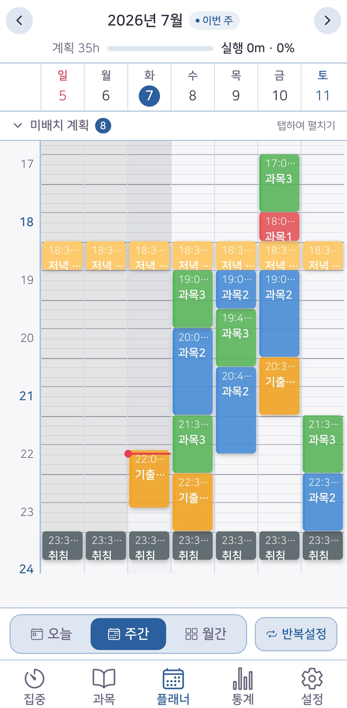
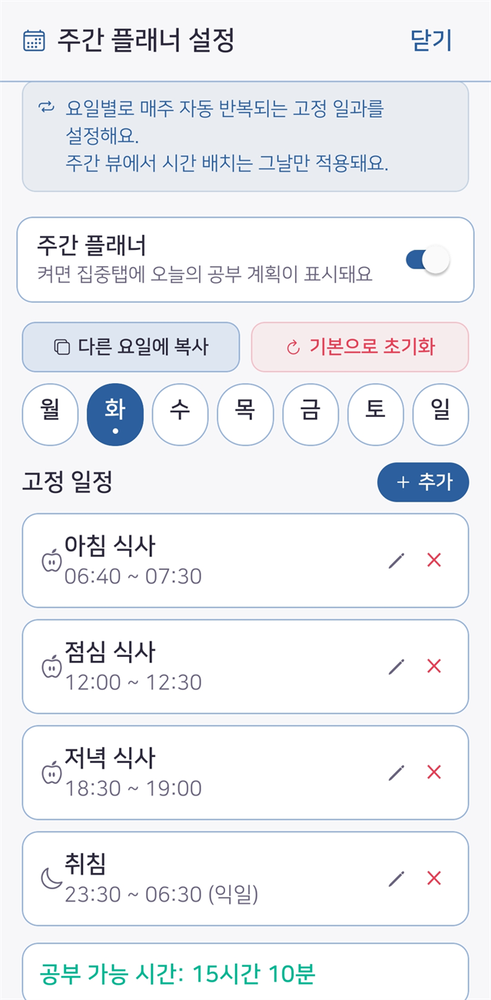
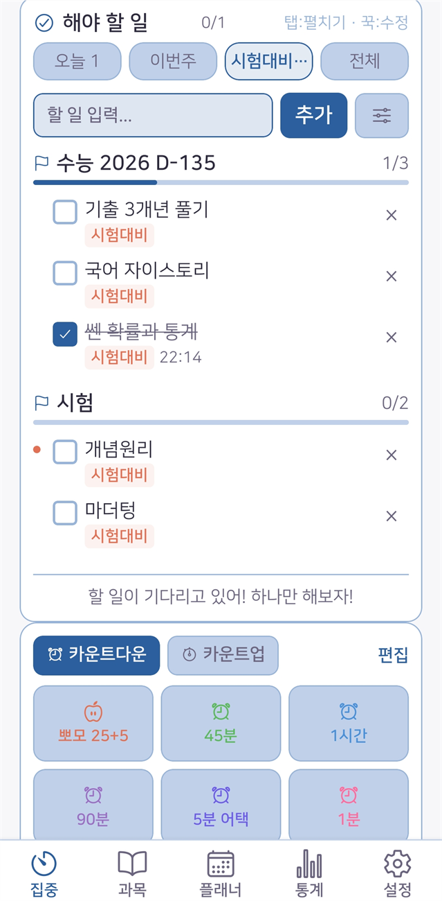
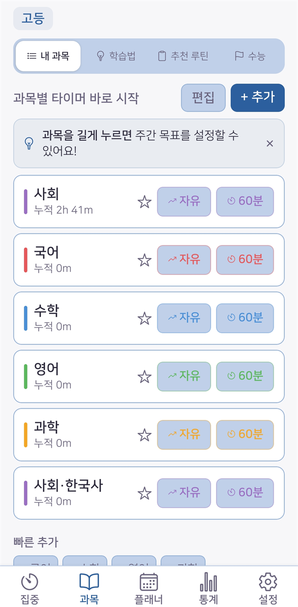
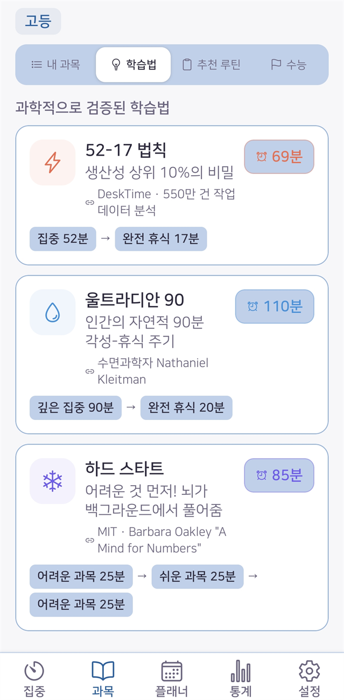

플래너 · 과목 탭
세운 계획과 실제 공부량이 자동으로 이어집니다. 달성률을 따로 계산할 필요가 없어요.

요일×시간 그리드에 과목·계획 블록을 배치하세요. 타이머로 공부한 시간이 계획 블록에 자동으로 채워지고, 달성률이 바로 보입니다.

학교·식사·취침처럼 매주 똑같은 일과는 요일별로 한 번만 넣어두면 자동으로 반복됩니다. 처음이라 막막하다면 '기본으로 초기화'로 학교급에 맞는 시간표를 한 번에 채우고, 필요한 부분만 손보면 돼요.

수능·기말고사·자격증 시험일을 등록하면 매일 자동으로 카운트합니다. 시험별로 준비 할 일 목록과 진행률을 함께 관리할 수 있어요.

과목마다 공부 시간이 자동으로 누적됩니다. 과목을 눌러 바로 타이머를 시작하고, 즐겨찾기와 주간 목표도 설정할 수 있어요.

어떻게 공부할지 고민될 땐 연구로 검증된 학습법을 프리셋으로 시작하세요. 학년에 맞춰 추천되고, 탭 한 번이면 여러 과목을 그대로 이어서 실행합니다.
무료로 이번 주 공부 계획을 짜고 달성률을 확인해 보세요.